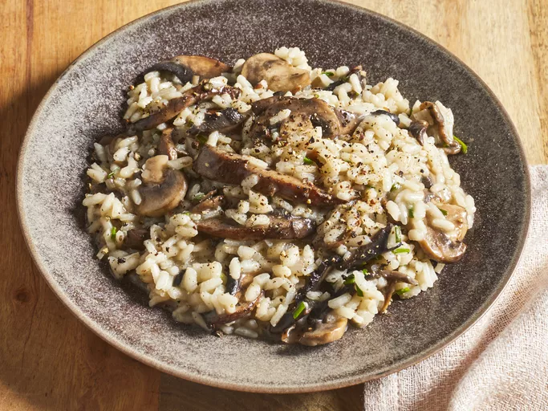

Gourmet Mushroom Risotto
Home

Description
There are all kinds of tasty add-ins to risotto,
and mushrooms are just one of them. Mushrooms add an earthy,
savory flavor to risotto that makes it a good complement to main
dishes like roast chicken, pork, or beef. You can serve mushroom
risotto as a side dish, a main dish, or a starter to a multi-course
Italian menu.
Ingredients
- 6 cups chicken broth, or as needed
- 3 tablespoons olive oil, divided
- 1 pound portobello mushrooms, thinly sliced
- 1 pound white mushrooms, thinly sliced
- 2 medium shallots, diced
- 1 ½ cups Arborio rice
- ½ cup dry white wine
- ⅓ cup freshly grated Parmesan cheese
- 4 tablespoons butter
- 3 tablespoons finely chopped chives
- sea salt and freshly ground black pepper to taste
Steps
- Gather all ingredients.
- Warm broth in a saucepan over low heat. Meanwhile, warm 2 tablespoons olive oil in a deep-sided large
saucepan over medium-high heat. Add sliced portobello and white mushrooms; cook and stir until soft, about 3
minutes. Remove mushrooms and their liquid to a bowl; set aside.
- Add remaining 1 tablespoon olive oil to the saucepan. Stir in shallots and cook for 1 minute. Add rice; cook
and stir until rice is coated with oil and pale, golden in color, about 2 minutes.
- Pour in wine, stirring constantly until wine is fully absorbed. Add ½ cup warm broth to the rice, and stir
until the broth is absorbed.
- Continue adding broth, ½ cup at a time, stirring constantly, until the liquid is absorbed and the rice is
tender, yet firm to the bite, about 15 to 20 minutes.
- Remove from heat. Stir in reserved mushrooms and their liquid, Parmesan cheese, butter, and chives; season
with salt and pepper.
- Serve immediately.